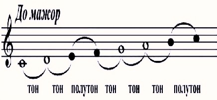

Урок 12. Строение мажорной гаммы.
Теория
Мажорная гамма — это последовательность из семи звуков, расположенных по определённому порядку тонов и полутонов.
- В мажорной гамме между нотами До–Ре, Ре–Ми, Фа–Соль, Соль–Ля, Ля–Си — тон.
- Между Ми–Фа и Си–До — полутон.
- Такой порядок тонов и полутонов создаёт характерное светлое и радостное звучание мажорной гаммы.
Строение мажорной гаммы: тон — тон — полутон — тон — тон — тон — полутон.
Например, гамма До-мажор: До, Ре, Ми, Фа, Соль, Ля, Си, До.
Знание строения гаммы помогает правильно исполнять мелодии и аккорды в мажорной тональности.
Упражнения
- Распознавание интервала: Определите, какой интервал между нотами — тон или полутон (Между До и Ре — тон; Между Ми и Фа — полутон; Между Ля и Си — тон; Между Си и До — полутон).
- Пение: Пропойте мажорную гамму вверх и вниз, обращая внимание на полутоны (До, Ре, Ми, Фа, Соль, Ля, Си, До).
Аудио-примеры
Мажорная гамма вверх и вниз:
Визуальные примеры
Строение мажорной гаммы на нотном стане:

Тоны и полутоны в До-мажоре:
